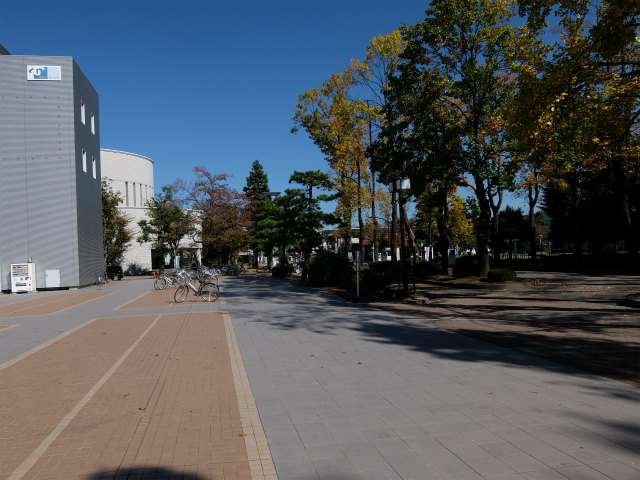

| ・第92期 日本機械学会流体工学部門 講演会(H26.10.25-26) | |||
前回から2年ぶりに参加です。第92期 日本機械学会流体工学部門 講演会にA井くんが、「デコンボリューションを用いたディジタルホログラフィ粒子計測とその応用」を発表しました。村田先生が、「 仮想粒子ディジタルホログラムを用いた高精度粒子検出反復法」を発表しました。富山は可視化以来の3年ぶり。 |
|||
|
サンダーバードで |
看板の確認 | ||
|

広々してるね |
木立が良い感じ | ||
|
PSFを |
こんな感じで | ||
|
懇親会 |
やっぱ地酒は大事 | ||
|
富山城 |
助教「コンパクトシティの要として（以下略」 | ||
|
村田先生のご発表 |
質疑応答中 | ||
|
滝廉太郎の荒城の月が云々 |
さて帰ろう | ||